DOTs in Action
Learn to build a monitoring system you can explain and change. Run Prometheus and author a reusable definition in Lessons 1–2. Connect Node Exporter in Lesson 3, then add Grafana in Lesson 4. Verify the real query results and clean up the owned resources at the end of each live lesson.
Your first visible result is small: Prometheus answers its real API. Next, your own DOT passes validation. A labelled query then proves that Prometheus scraped Node Exporter; Grafana retrieves that same sample. Each lesson separates its declaration, preview and live checks.
Start with DOTs for Dummies
Read DOTs for Dummies first. That introductory book supplies the concepts used here. This practical book assumes that background and takes you through installation, authoring, integration, live checks and cleanup. Keep both books available as you work; the concepts are explained in the introduction and applied in the lessons.
Build on those concepts

Grafana sends queries to Prometheus; Prometheus pulls metrics from Node Exporter. The CLI’s topology uses a different, logical direction: a Wire points from the Anchor that provides an interface to the Anchor that requires it. Both views describe the same system. A Wire does not determine which tool sends a request.
The reusable DOT says what a tool can do and how it runs. Your composition says which instances work together for this particular monitoring use case. Scrape targets, datasource configuration and credentials belong to that use case.
Your route
| Lesson | What you build | How you know it works |
|---|---|---|
A mental model of the ecosystem and its main DOT-Domain building blocks |
You can trace Contract → Anchor → service port and explain what a composition adds. |
|
An existing Prometheus deployment |
Its real API reports version 3.15.1; cleanup removes its owned resources. |
|
Your own Prometheus definition, with a pinned official Contract, named Anchors, configuration and two Docker deployment choices |
Reusable validation passes; you can identify its three Anchors and two Docker deployment choices. |
|
Your Prometheus DOT plus the catalogue’s Node Exporter |
A labelled PromQL query returns |
|
The same monitoring graph extended with Grafana |
Grafana returns the same sample through its datasource; all three owned instances are cleaned up. |
|
A route into authenticated APIs, policy, other runtimes and Contract standards |
You can identify which additional prerequisites and live checks each extension needs. |
Choose your pace. Finish Lesson 1 for a first API response and Lesson 2 for a validated authored DOT. Complete Lessons 3–4 for the connected monitoring system. Lesson 5 is an optional operator path with additional setup. Every live lesson ends with cleanup; stop there whenever you need a break. Downloads and startup depend on your machine and cache; take the time needed to review each result.
To watch before authoring, ask a presenter with a prepared source checkout to show the guided demo. Running that demo yourself requires its separate contributor/operator preparation. These lessons use the released binary and their own setup; you create and inspect the files as you work.
Before you start
Use Linux amd64, Bash, Git, GitHub CLI, curl, jq, SHA-256 utilities and
Docker with Compose. You need authorized access to the MARE repositories and
release assets. The main four lessons need no Java, Go, Task or Kubernetes.
Use the released CLI v0.4.1 with its manifest-pinned
catalogue 6613a995a7406012aed1bc7bde2f1feabc3db935 throughout. Lesson 1 includes installation.
Do not switch to floating main halfway through: a version string alone does
not identify later source changes. Identity-based lookups select the exact
product release without guessing its catalogue path.
|
Released route: CLI |
|
Use an isolated development machine. The lab exposes disposable HTTP services; Docker publication can listen beyond localhost. Restrict access with your host firewall and use a lab-only Grafana password. This is not a hardened monitoring deployment. Node Exporter observes its container, not your physical host. |
Validation establishes declared constraints and resolved interfaces. Only the API checks establish the particular live behavior exercised here. Neither result certifies every catalogue definition or every API of the selected tools.
Follow a repeatable rhythm
-
Read the goal, then run one complete Bash block at a time. Copy commands without adding a shell-prompt character. Keep one terminal and the matching CLI/catalogue throughout; variables carry your workspace into later lessons. A trailing
\continues the same command on the next line. Copy the whole block, including those characters. -
Inspect your work. Open the named file when a lesson asks for an edit. Keep YAML indentation exactly as shown. The longer shell blocks perform checked setup and verification; you do not need to memorize them.
-
Check the result. Validation checks declarations; a dry-run previews deployment. Continue to live execution only after those steps succeed.
-
Clean up before moving on. Use the lesson’s original draft, lock, binary and cache. If a step fails, stop and use the resume and recovery guide.
Know where your work lives
Lesson 1 prints a private workspace path, referred to as $LAB throughout.
The catalogue is a separate, pinned checkout; exercises do not edit it.
| Inside your workspace | Purpose |
|---|---|
|
Your paths, ports and original CLI identity for resuming. It stores no password. |
|
The generated scaffold and your enriched reusable tool definition from Lesson 2. |
|
Your two-tool graph and its scrape configuration from Lesson 3. |
|
Your extended graph, private Grafana definition and provisioning inputs from Lesson 4. |
Adjacent |
Reviewed exact inputs created explicitly for each graph. Keep them for recovery. |
The hands-on lessons end with a checkpoint and a short explanation exercise. Use those to test your understanding before moving to the next layer.
Begin with Lesson 1: run your first DOT.